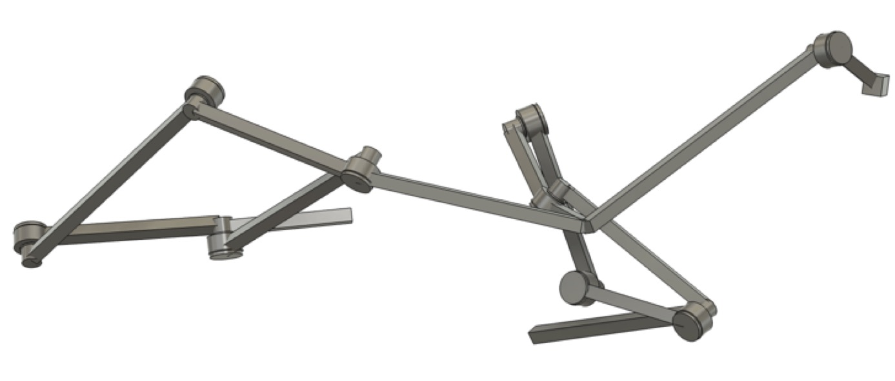
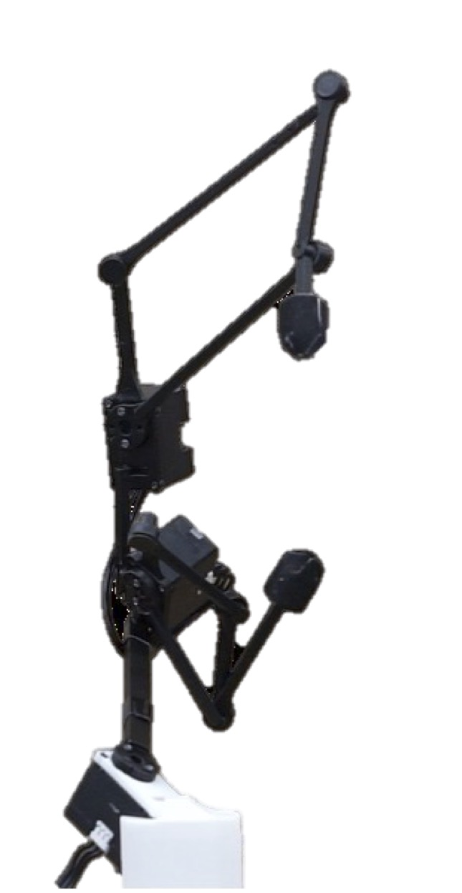

Real-time teleoperation
Human thumb-index gestures are retargeted to the generated hand using only inverse kinematics.
Project page
Human motion can be used not only to train robot policies, but also optimize hardware designs.
UC San Diego | Amazon Frontier AI and Robotics
We present a data-driven framework for generating robot hands from human demonstrations. Instead of tightly coupling the hardware design with a specific control policy, the hand is designed under the same controller used after fabrication: inverse kinematics that matches target thumb-index fingertip motion. The framework produces a high-DoF generalist hand for a wide range of daily tasks and lower-DoF specialized hands whose mimic joints encode structured task motions directly into hardware.
The 6-DoF design is optimized over the full human motion dataset. After fabrication, it uses online inverse kinematics to retarget thumb-index fingertip motion in real time.
Human thumb-index gestures are retargeted to the generated hand using only inverse kinematics.
Without the need of complex retargeting algorithms, the generalist hand can perform precise tasks like holding a napkin while moving fingers.
Fingertips trace structured paths that are difficult to teleoperate directly.
Percentage of frames with fingertip error below 1 mm.
| DoF | Hand | Thumb | Index |
|---|---|---|---|
| 3 | 3-DoF mimic-joint hand | 12.22% | 2.39% |
| 3-DoF fully actuated hand | 10.07% | 4.98% | |
| Inspire Hand | 0.00% | 0.04% | |
| 4 | 4-DoF fully actuated hand | 16.27% | 10.60% |
| 5 | 5-DoF fully actuated hand | 63.12% | 40.56% |
| 6 | XHand robot hand | 83.69% | 3.77% |
| 6-DoF fully actuated hand | 95.38% | 98.19% |
For specific tasks, the method generates 3-DoF hands with spatial four-bar mimic joints. The passive coupling reduces actuation (and cost!) while preserving the target behavior.
A lid-twisting human motion > coupled motion rotates the lid.
Input demo
Generated hand
A key insertion demonstration > task-specific hand that holds and inserts the key.
Input demo
Generated hand
Predefined trajectory (the thumb follows a circle while the index finger follows a square) > generated hand that tracks the motion.
Target trajectory
Generated hand
Mean +/- standard deviation fingertip error in millimeters. Lower is better.
| Task | Hand | Thumb | Index | Overall |
|---|---|---|---|---|
| Lid-off | 3-DoF mimic-joint hand | 1.888 +/- 2.257 | 2.784 +/- 2.775 | 2.336 +/- 2.569 |
| 3-DoF fully actuated hand | 1.457 +/- 1.903 | 2.535 +/- 2.688 | 1.996 +/- 2.390 | |
| Key | 3-DoF mimic-joint hand | 2.031 +/- 1.694 | 0.174 +/- 0.256 | 1.102 +/- 1.526 |
| 3-DoF fully actuated hand | 2.282 +/- 1.756 | 3.583 +/- 2.690 | 2.933 +/- 2.362 | |
| Circle-square | 3-DoF mimic-joint hand | 0.015 +/- 0.005 | 1.295 +/- 0.960 | 0.655 +/- 0.933 |
| 3-DoF fully actuated hand | 0.009 +/- 0.002 | 10.851 +/- 4.477 | 5.430 +/- 6.278 |

We use simple geometries to generate the robot hand mesh, then polish it in Fusion 360.
Generate robot hand mesh
3D print it and remove support
Print-in-place joints

Attach the motors to the motor holders at the actuated joints.
Actuate the hand
The method learns hardware under the same simple controller used after fabrication. A trajectory-conditioned actor accelerates low-DoF generation by proposing hardware and control initializations before refinement.
@article{yi2026generating,
title = {Generating Robot Hands from Human Demonstrations},
author = {Yi, Sha and Hansen, Nicklas and Bai, Xueqian and
Sferrazza, Carmelo and Tolley, Michael T. and Wang, Xiaolong},
year = {2026},
url = {https://arxiv.org/abs/2606.20549}
}